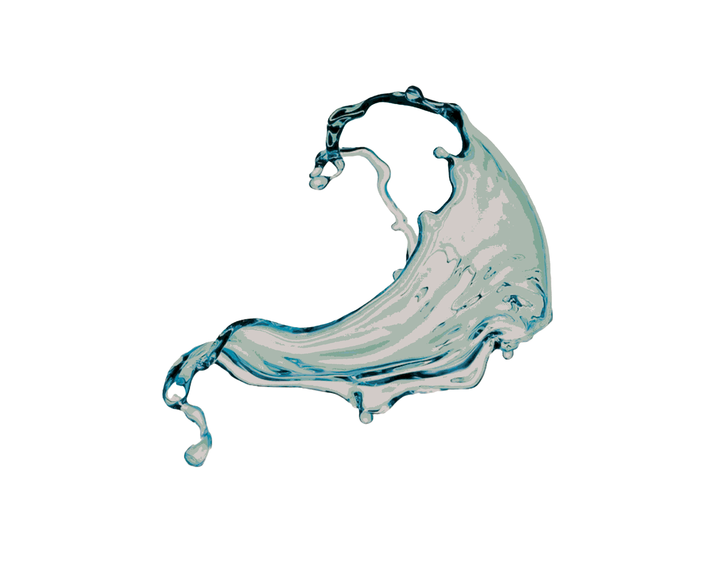

Cancer:
Your essential purpose in life is to nurture and care for whatever or whomever you believe needs it. So you have an instinct for survival, marked by a sense of what best constitutes protection and nourishment. But what essentially gives you this instinct is your sense of need, sympathy, and emotional receptivity. As Cancer is such a female and maternal sign, if you are a women you are usually a neatural wife and mothe, and you meet your own needs through meeting thr needs of others. The limitation here is that such a life can become dull and automatic, with Cancerian priority, home, turning into a prison.
However, a Cancerian man may seek to have his unfullfilled need for security met by making his partner into his 'mother'. this can wind up being very restrcitve to them for obvious reasons, and to him too because he is so dependent upon them staying that way, However, there is pronounced tenderness inside him that makes for being a good carer or parent, and that people find very attractive. Having someone or something to selflessly care for is the key to being a secure and happy crab. Wht were clinging claws, or would 'cam-up' at the slightest sign of emotion intrusion, then becomes a pair or open arms that holds firmly, cradles gently. The acute awareness of another's feelings, which negatively can feel threatened and be used to emotionally blackmail, becomes a ray of healing. Cancer's motto could be 'Who cares is cared for'.
Your essential purpose in life is to nurture and care for whatever or whomever you believe needs it. So you have an instinct for survival, marked by a sense of what best constitutes protection and nourishment. But what essentially gives you this instinct is your sense of need, sympathy, and emotional receptivity. As Cancer is such a female and maternal sign, if you are a women you are usually a neatural wife and mothe, and you meet your own needs through meeting thr needs of others. The limitation here is that such a life can become dull and automatic, with Cancerian priority, home, turning into a prison.
However, a Cancerian man may seek to have his unfullfilled need for security met by making his partner into his 'mother'. this can wind up being very restrcitve to them for obvious reasons, and to him too because he is so dependent upon them staying that way, However, there is pronounced tenderness inside him that makes for being a good carer or parent, and that people find very attractive. Having someone or something to selflessly care for is the key to being a secure and happy crab. Wht were clinging claws, or would 'cam-up' at the slightest sign of emotion intrusion, then becomes a pair or open arms that holds firmly, cradles gently. The acute awareness of another's feelings, which negatively can feel threatened and be used to emotionally blackmail, becomes a ray of healing. Cancer's motto could be 'Who cares is cared for'.